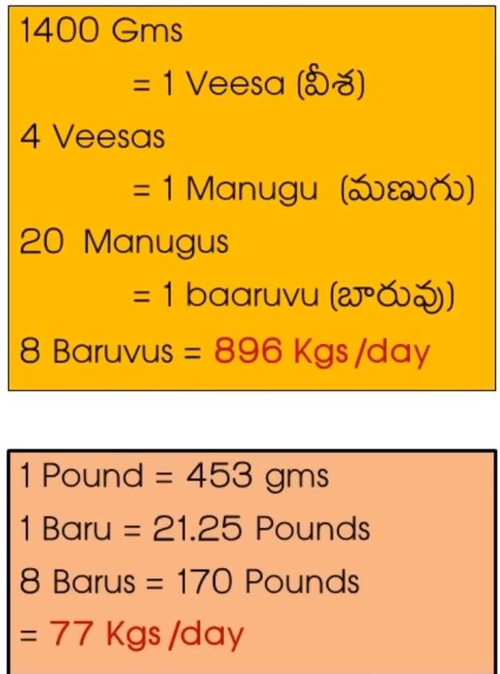

Researchers claim that, almost 5000 years ago on February 18th, Lord Krishna left his mortal body
Divine transcendental attributes such as Syamantaka Mani too vanished without a trace as Lord Krishna left his mortal body
Except to those well-versed with Srimad Bhagavatam, Syamantaka Mani's whereabouts are unknown to many of us.
Presently, not many of us are aware of Syamantaka Mani's whereabouts since Lord Ganesh's narrative...
Please read until the end as there is a great deal of information in our arduous and equally extensive research.
To begin with, Satrajit received Syamantaka Mani from Lord Suryanarayana.
The Sun God stated that Syamantaka Mani prevents death, natural calamities, diseases etc.
Satrajit was also informed that Syamantaka Mani yields Eight measures of gold every single day.

As shown in the image, there are two inferences to what could have been "eight measures"
As per the first inference, eight measures would be 896 kg with the second inference being 77 kg...
with neither of them being inferior.
Satrajit met Lord Krishna, who approved of Ugrasena instead as its more appropriate for a king to possess the legendary gem.
Satrajit chose to disregard the Supreme; Syamantaka Mani means "syamam vitarkam antayati ithi syamantakaha..."
meaning it destroys any thoughts, therefore Satrajit walked away sporting Syamantaka Mani.
Satrajit's brother Prasena was mauled to death by a lion. It ran away with the gem. By now, its in the possession of owner #4.
Jambavantha killed the lion and owned the gem. Eventually; Lord Krishna won, married Jambavati and owned Syamantaka Mani
Lord Krishna presented Syamantaka Mani to Satrajit, who ritually purified and henceforth earnestly worshipped the gem.
Syamantaka Mani gave eight measures of gold since, but Satrajit was remorseful for questioning Lord Krishna's integrity.
He felt inferior to Jambavan, a widely-known narrative, and offered Satyabhama's hand in marriage along with the gem.
Lord Krishna graciously returned Syamantaka Mani to Satrajit as it was a gift from Lord Suryanarayana.
According to Srimad Bhagavatam; Satrajit promised Satyabhama to Shatadhanva in marriage.
Satrajit could not fulfil his promise, which angered Shatadhanva and thus he held a grudge against Lord Krishna.
Akrura, Lord Krishna's staunch devotee, saw His iconic infinite form yet somehow faltered.
Akrura wished for Satrajit to be killed for questioning Lord Krishna's uprightness on Syamantaka Mani.
Akrura thus provoked Shatadhanva to kill Satrajit for breaking his word and also suggested he claim Syamantaka Mani.
Heeding Akrura's advice, Shatadhanva acted upon it. Hearing this, Lord Krishna and Lord Balram chased Shatadhanva.
As was the case with Sishupala and the like, Lord Krishna killed Shatadhanva with the transcendental Sudarshana Chakra.
Lord Balram held Lord Krishna responsible for hiding Syamantaka Mani as it was not found on Shatadhanva.
Owing to the gem's ability to destroy one's reasoning; Lord Balram was no exception in suspecting Lord Krishna either.
Aware, yet Lord Krishna maintained silence. Eventually; Akrura moved to Kasi, which resulted in Dwaraka's drought.
Similar to Sage Rishyasringa; Akrura's presence always brought prosperity along with bountiful rains to the kingdom.
Owing to the drought, Lord Krishna sent for Akrura, who sceptically yet dutifully returned to Dwaraka.
Reassuring on his safety, Lord Krishna requested Akrura to bring Syamantaka Mani along, which he did.
Apparently, Shatadhanva returned Syamantaka Mani to Akrura as he breathed his last.
Lord Krishna suggested Akrura retain Syamantaka Mani and perform yagnas for the prosperity of Dwaraka instead.
According to Srimad Bhagavatam, this is where the narrative of Syamantaka Mani ends. What happened next?
We are through with the literary approach, so lets apply research strategy going forward...
Ever since, theorists came up with five premises. Lets explore the certainties and speculations further...
« Previous
Next »